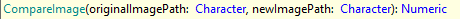

Compares the second image against the first one. Returns the percentage similarity as an integer number, returning 100 if the images are equal. Images must have similar aspect ratios in order for the comparison to be performed.
Parameters
- OriginalImagePath (Character): the path of the image you want to compare the new image against. It also supports references to external images, such as those in a shared drive or the web.
- NewImagePath (Character): the path of the image you want to compare against the original. It also supports references to external images, such as those in a shared drive or the web.
Returns
- An integer value between 0 and 100 that represents the similarity percentage between the images compared. Equal images return 100.
Examples
&driver.Verify(&driver.CompareImage("C:\screenshot1.png","C:\screenshot2.png") > 95, true, "Comparing screenshots") // Local images
&driver.Verify(&driver.CompareImage("C:\screenshot1.png","https://somewhere/screenshot2.png") > 95, true, "Comparing screenshots") // Local image vs web image
&driver.Verify(&driver.CompareImage(ExpectedPageAfterInsert.Link(),"currentScreenshot.png") > 95, true, "Comparing screenshots") // KB image vs local relative path image
To view the differences between the images compared, click on the image icon associated with the CompareImage command. The differences will be highlighted with a pink fluor color.
Disclaimers
- The best results can be achieved by comparing images with the same resolution.
- Image diff visibility(in the TestResults' window) is only offered when the user compares two images with the same resolution.
- Two images with different resolutions will be compared as long as their aspect ratios (e.g. 16:9 when talking about FHD resolution) are similar. A square image and a rectangular image will give result 0 due to an aspect ratio incompatibility.
- Two images that appear similar can be really different in reality, for example, if one image is offset by 1px, every pixel in that image can potentially be different than the one in the original.
- Two images of the same website taken on two monitors with the same resolution but different scaling (OS setting) will not be comparable.
- Comparing two full-page screenshots of a webpage with dynamic content loading is not a good idea since the result might differ between executions due to loading times.
This command is available since GeneXus 17 upgrade 6.